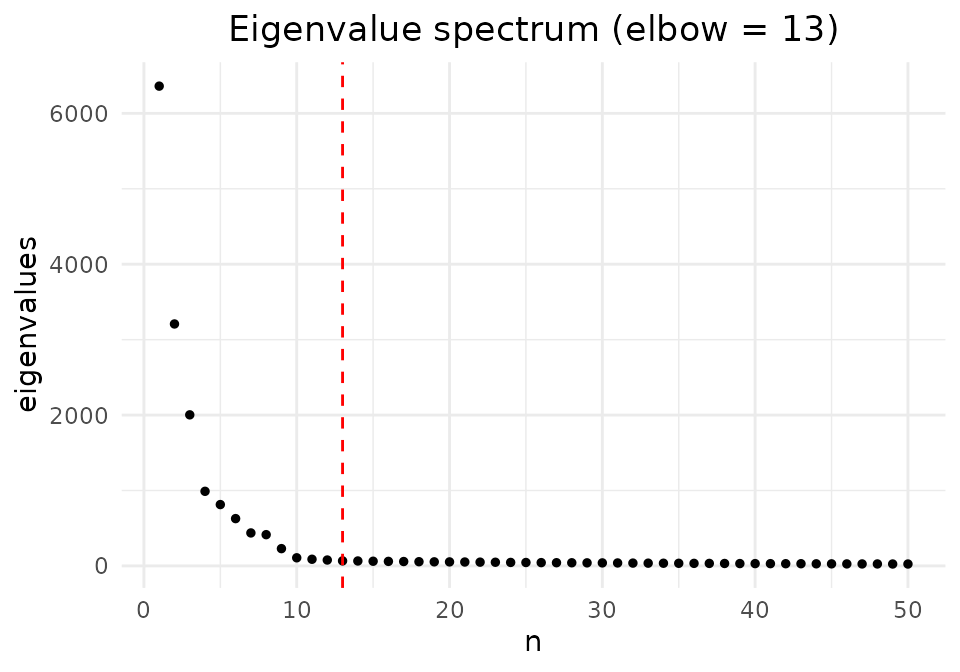
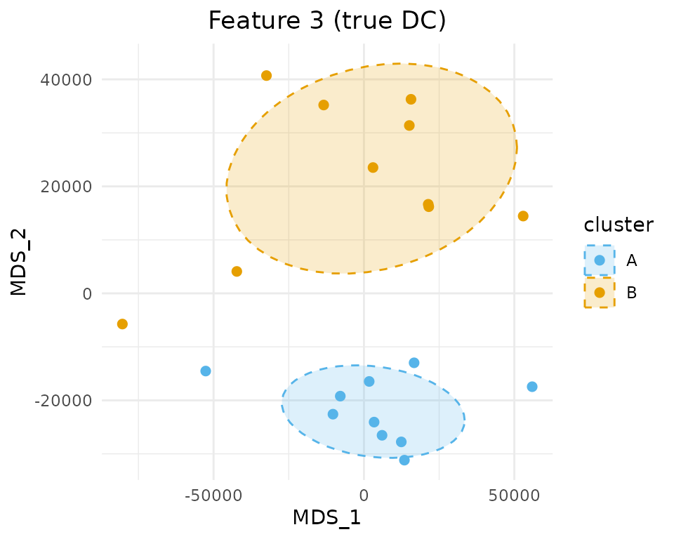
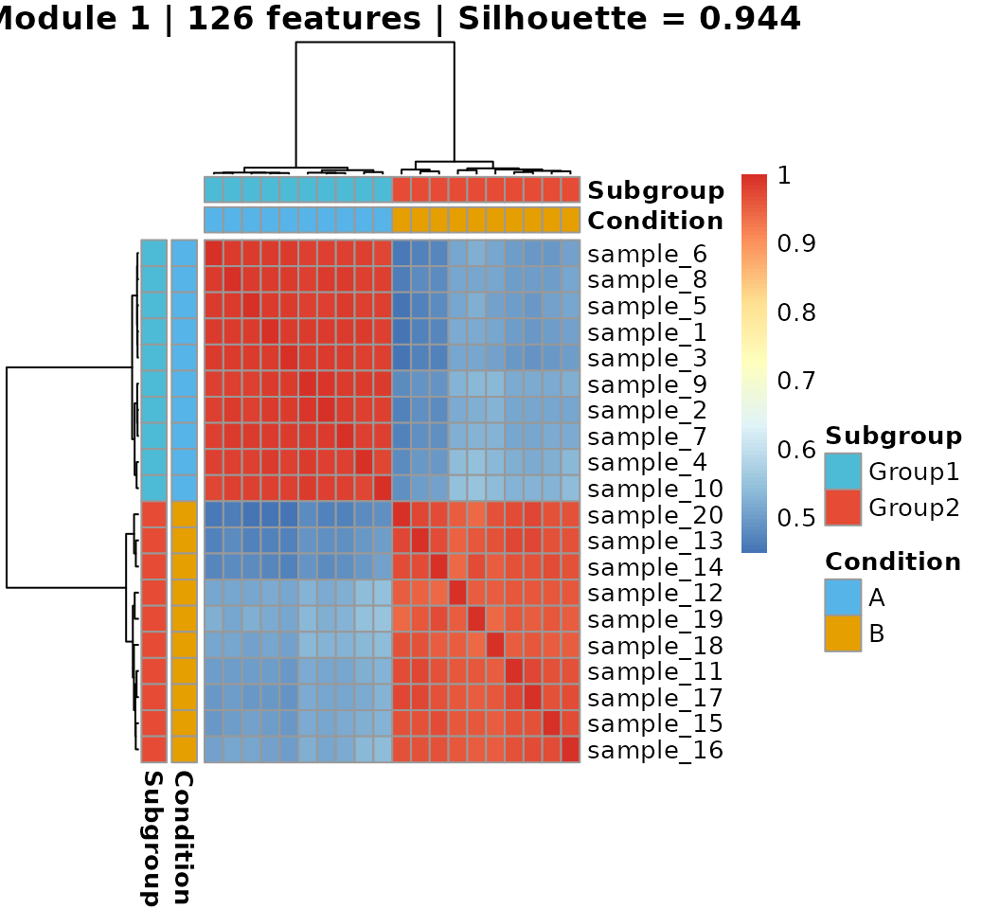

This vignette runs the MOSAIC pipeline on simulated data.
We will:
- Generate synthetic multi-modal data with known differential connectivity (DC) signal
- Run the MOSAIC embedding
- Perform differential connectivity analysis
- Detect patient subgroups from feature modules
Step 1: Generate Simulated Data
We simulate a two-modality dataset with 20 samples (10 per condition), where 20% of features undergo connectivity rewiring between conditions A and B.
library(MOSAIC)
library(ggplot2)
sim <- simulate_multimodal_data(
simulation_type = "DC",
n_features = c(500, 400),
signal_prop = 0.2,
seed = 42,
rescale = TRUE,
add_batch = FALSE,
nonlinear = FALSE,
sample_noise_level = 0.5,
feature_noise_level = 0.5,
cell_noise_level = 0.5
)
cat("Modalities:", length(sim$seurat_list), "\n")
#> Modalities: 2
cat("Samples:", nrow(sim$sample_metadata), "\n")
#> Samples: 20
cat("Features per modality:", sapply(sim$seurat_list, nrow), "\n")
#> Features per modality: 500 400The returned Seurat objects include ground-truth labels: feature_cluster (which module a feature belongs to) and is_de (whether the feature was rewired).
Step 2: Run MOSAIC Embedding
result <- run_MOSAIC(
sim$seurat_list,
assays = c("originalexp", "originalexp"),
sample_meta = "sample_id",
condition_meta = "condition"
)
#> MOSAIC: 2 modality/modalities, 20 samples detected
#> Processing sample 1 / 20
#> Processing sample 2 / 20
#> Processing sample 3 / 20
#> Processing sample 4 / 20
#> Processing sample 5 / 20
#> Processing sample 6 / 20
#> Processing sample 7 / 20
#> Processing sample 8 / 20
#> Processing sample 9 / 20
#> Processing sample 10 / 20
#> Processing sample 11 / 20
#> Processing sample 12 / 20
#> Processing sample 13 / 20
#> Processing sample 14 / 20
#> Processing sample 15 / 20
#> Processing sample 16 / 20
#> Processing sample 17 / 20
#> Processing sample 18 / 20
#> Processing sample 19 / 20
#> Processing sample 20 / 20
#> Per-sample rank (median): 12
#> Global rank: 13
#> Done.Visualize the Eigenvalue Spectrum
Eigenvalues of the aggregated matrix; the red line marks the selected dimension.
elbow <- find_elbow_kneedle(result$eigenvalues)
plot_eigen(result$eigenvalues) +
geom_vline(xintercept = elbow, color = "red", linetype = "dashed") +
ggtitle(paste0("Eigenvalue spectrum (elbow = ", elbow, ")"))
Step 3: Differential Connectivity Analysis
3a. Run the DC test
run_DC_test() computes a PERMANOVA pseudo-F statistic for each feature and permutes the condition labels across samples. With 10 samples per condition, all 184,756 assignments are enumerated.
dc <- run_DC_test(
result$mosaic_embed_list,
groups = result$annotation$Condition
)
c(exact = dc$exact, n_assignments = dc$n_perm)
#> exact n_assignments
#> 1 184756
head(dc$results[order(dc$results$pvalue, -dc$results$F_stat), ])
#> feature F_stat R2 pvalue padj
#> 467 feature-a-467 5718.411 0.9968621 1.082509e-05 4.847054e-05
#> 228 feature-a-228 4266.970 0.9957993 1.082509e-05 4.847054e-05
#> 303 feature-a-303 4149.610 0.9956810 1.082509e-05 4.847054e-05
#> 638 feature-b-138 2839.953 0.9937018 1.082509e-05 4.847054e-05
#> 657 feature-b-157 2741.388 0.9934768 1.082509e-05 4.847054e-05
#> 136 feature-a-136 2732.734 0.9934563 1.082509e-05 4.847054e-053b. Compare with ground truth
Rewired features (is_de) move to a different module in condition B, which also changes the coupling profiles of the features they are coupled to. We evaluate how well the pseudo-F statistic ranks the rewired features.
# Ground truth: combine is_de from both modalities
ground_truth <- c(
sim$seurat_list[[1]][["originalexp"]][[]]$is_de,
sim$seurat_list[[2]][["originalexp"]][[]]$is_de
)
true_dc <- which(ground_truth)
# Rank features by the observed pseudo-F statistic
hits <- ground_truth[order(-dc$results$F_stat)]
average_precision <- sum(cumsum(hits)[hits] / which(hits)) / sum(hits)
top_k_precision <- mean(hits[seq_len(sum(hits))])
cat(sprintf("Average precision: %.3f (random ranking: %.2f)\n",
average_precision, mean(ground_truth)))
#> Average precision: 0.890 (random ranking: 0.20)
cat(sprintf("Precision among the top %d features: %.3f\n",
sum(hits), top_k_precision))
#> Precision among the top 180 features: 0.783
# Features significant after Benjamini-Hochberg correction
cat(sum(dc$results$padj < 0.05), "features with BH-adjusted P < 0.05, of which",
sum(dc$results$padj[true_dc] < 0.05), "of", length(true_dc), "rewired features\n")
#> 357 features with BH-adjusted P < 0.05, of which 172 of 180 rewired features3c. Visualize a DC feature
Classical MDS of the Euclidean distances between the sample embeddings of one feature, the same distances used by the test.
# Pick a true DC feature
chosen_idx <- true_dc[1]
M_f <- t(sapply(result$mosaic_embed_list, function(e) e[chosen_idx, ]))
plot_mds_cluster(
as.matrix(dist(M_f)), dis = TRUE,
title = paste("Feature", chosen_idx, "(true DC)"),
cluster = result$annotation$Condition,
custom_colors = c("A" = "#56B4E9", "B" = "#E69F00"),
size = 2,
ellipse_level = 0.68
)
Step 4: Unsupervised Subgroup Detection
Condition labels are not used in this step.
4a. Compute feature stratification profiles
For each feature, the cosine similarity between its sample embeddings gives a sample-by-sample matrix; its upper triangle is the feature’s stratification profile.
sim_list <- compute_feature_similarity(result$mosaic_embed_list)
sim_vectors <- lapply(sim_list, function(mat) {
mat[upper.tri(mat, diag = FALSE)]
})
strat_matrix <- do.call(cbind, sim_vectors)
feature_corr <- cor(strat_matrix, method = "spearman")4b. Identify feature modules
library(dynamicTreeCut)
dist_feat <- as.dist(1 - feature_corr)
hc_feat <- hclust(dist_feat, method = "ward.D2")
feature_clusters <- cutreeDynamic(
dendro = hc_feat,
distM = as.matrix(dist_feat),
minClusterSize = 15,
method = "hybrid",
deepSplit = 2
)
#> ..cutHeight not given, setting it to 8.38 ===> 99% of the (truncated) height range in dendro.
#> ..done.
names(feature_clusters) <- colnames(feature_corr)
module_ids <- sort(unique(feature_clusters[feature_clusters > 0]))
cat(length(module_ids), "modules identified\n")
#> 26 modules identified
cat("Module sizes:", sapply(module_ids, function(m) sum(feature_clusters == m)), "\n")
#> Module sizes: 126 107 55 42 41 38 34 32 31 31 30 28 28 27 25 25 25 24 23 21 20 19 19 18 16 154c. Screen modules for subgroups
total_features <- nrow(result$mosaic_embed_list[[1]])
screen_results <- data.frame(
module = integer(), n_features = integer(),
silhouette = numeric(), balanced = logical(),
stringsAsFactors = FALSE
)
for (m in module_ids) {
idx <- which(feature_clusters == m)
sim_mat <- compute_module_similarity(result$mosaic_embed_list, idx)
partition <- find_partition_hclust(as.dist(1 - sim_mat))
screen_results <- rbind(screen_results, data.frame(
module = m,
n_features = length(idx),
silhouette = ifelse(partition$balanced, partition$silhouette, NA),
balanced = partition$balanced
))
}
screen_results <- screen_results[order(-screen_results$silhouette), ]
print(screen_results)
#> module n_features silhouette balanced
#> 1 1 126 0.9441849 TRUE
#> 2 2 107 0.9321294 TRUE
#> 19 19 23 0.6709530 TRUE
#> 10 10 31 0.1785314 TRUE
#> 3 3 55 NA FALSE
#> 4 4 42 NA FALSE
#> 5 5 41 NA FALSE
#> 6 6 38 NA FALSE
#> 7 7 34 NA FALSE
#> 8 8 32 NA FALSE
#> 9 9 31 NA FALSE
#> 11 11 30 NA FALSE
#> 12 12 28 NA FALSE
#> 13 13 28 NA FALSE
#> 14 14 27 NA FALSE
#> 15 15 25 NA FALSE
#> 16 16 25 NA FALSE
#> 17 17 25 NA FALSE
#> 18 18 24 NA FALSE
#> 20 20 21 NA FALSE
#> 21 21 20 NA FALSE
#> 22 22 19 NA FALSE
#> 23 23 19 NA FALSE
#> 24 24 18 NA FALSE
#> 25 25 16 NA FALSE
#> 26 26 15 NA FALSE4d. Visualize the best module’s heatmap
library(pheatmap)
best_module <- screen_results$module[which.max(screen_results$silhouette)]
best_idx <- which(feature_clusters == best_module)
sim_mat <- compute_module_similarity(result$mosaic_embed_list, best_idx)
partition <- find_partition_hclust(as.dist(1 - sim_mat))
annotation <- result$annotation
annotation$Subgroup <- ifelse(partition$groups == 1, "Group1", "Group2")
annotation_colors <- list(
Condition = c("A" = "#56B4E9", "B" = "#E69F00"),
Subgroup = c("Group1" = "#4DBBD5", "Group2" = "#E64B35")
)
pheatmap(
sim_mat,
annotation_row = annotation,
annotation_col = annotation,
annotation_colors = annotation_colors,
cluster_rows = partition$hclust,
cluster_cols = partition$hclust,
show_rownames = TRUE,
show_colnames = FALSE,
main = sprintf("Module %d | %d features | Silhouette = %.3f",
best_module, length(best_idx), partition$silhouette)
)
cat("\nSubgroup x Condition:\n")
#>
#> Subgroup x Condition:
print(table(annotation$Subgroup, annotation$Condition))
#>
#> A B
#> Group1 10 0
#> Group2 0 10The subgroups of the top module are compared with the true conditions A and B.
Session Info
sessionInfo()
#> R version 4.1.0 (2021-05-18)
#> Platform: x86_64-pc-linux-gnu (64-bit)
#> Running under: Ubuntu 20.04.2 LTS
#>
#> Matrix products: default
#> BLAS: /usr/lib/x86_64-linux-gnu/openblas-pthread/libblas.so.3
#> LAPACK: /usr/lib/x86_64-linux-gnu/openblas-pthread/liblapack.so.3
#>
#> locale:
#> [1] LC_CTYPE=en_US.UTF-8 LC_NUMERIC=C
#> [3] LC_TIME=en_US.UTF-8 LC_COLLATE=en_US.UTF-8
#> [5] LC_MONETARY=en_US.UTF-8 LC_MESSAGES=en_US.UTF-8
#> [7] LC_PAPER=en_US.UTF-8 LC_NAME=C
#> [9] LC_ADDRESS=C LC_TELEPHONE=C
#> [11] LC_MEASUREMENT=en_US.UTF-8 LC_IDENTIFICATION=C
#>
#> attached base packages:
#> [1] stats graphics grDevices utils datasets methods base
#>
#> other attached packages:
#> [1] pheatmap_1.0.12 dynamicTreeCut_1.63-1 ggplot2_3.5.1
#> [4] MOSAIC_1.1.0
#>
#> loaded via a namespace (and not attached):
#> [1] Seurat_5.2.1 Rtsne_0.17 colorspace_2.1-1
#> [4] deldir_2.0-4 ggridges_0.5.6 RcppHNSW_0.6.0
#> [7] fs_1.6.5 spatstat.data_3.1-4 listenv_0.9.1
#> [10] farver_2.1.2 ggrepel_0.9.6 RSpectra_0.16-2
#> [13] codetools_0.2-18 splines_4.1.0 cachem_1.1.0
#> [16] knitr_1.49 polyclip_1.10-7 spam_2.11-1
#> [19] jsonlite_1.8.9 ica_1.0-3 cluster_2.1.2
#> [22] png_0.1-8 uwot_0.2.2 spatstat.sparse_3.1-0
#> [25] shiny_1.10.0 sctransform_0.4.1 compiler_4.1.0
#> [28] httr_1.4.7 SeuratObject_5.0.2 Matrix_1.6-5
#> [31] fastmap_1.2.0 lazyeval_0.2.2 cli_3.6.3
#> [34] later_1.4.1 htmltools_0.5.8.1 tools_4.1.0
#> [37] igraph_2.1.4 dotCall64_1.2 gtable_0.3.6
#> [40] glue_1.8.0 RANN_2.6.2 reshape2_1.4.4
#> [43] dplyr_1.1.4 Rcpp_1.0.14 scattermore_1.2
#> [46] spatstat.univar_3.1-1 jquerylib_0.1.4 pkgdown_2.1.1
#> [49] vctrs_0.6.5 nlme_3.1-152 spatstat.explore_3.3-4
#> [52] progressr_0.15.1 lmtest_0.9-40 spatstat.random_3.3-2
#> [55] xfun_0.50 stringr_1.5.1 globals_0.16.3
#> [58] mime_0.12 miniUI_0.1.1.1 lifecycle_1.0.4
#> [61] irlba_2.3.5.1 goftest_1.2-3 future_1.34.0
#> [64] MASS_7.3-54 zoo_1.8-12 scales_1.3.0
#> [67] spatstat.utils_3.1-2 ragg_1.3.3 promises_1.3.2
#> [70] parallel_4.1.0 RColorBrewer_1.1-3 yaml_2.3.10
#> [73] reticulate_1.40.0 pbapply_1.7-2 gridExtra_2.3
#> [76] sass_0.4.9 stringi_1.8.4 desc_1.4.3
#> [79] fastDummies_1.7.5 rlang_1.1.5 pkgconfig_2.0.3
#> [82] systemfonts_1.2.1 matrixStats_1.5.0 evaluate_1.0.3
#> [85] lattice_0.20-44 tensor_1.5 ROCR_1.0-11
#> [88] purrr_1.0.2 labeling_0.4.3 patchwork_1.3.0
#> [91] htmlwidgets_1.6.4 cowplot_1.1.3 tidyselect_1.2.1
#> [94] parallelly_1.41.0 RcppAnnoy_0.0.22 plyr_1.8.9
#> [97] magrittr_2.0.3 R6_2.5.1 generics_0.1.3
#> [100] withr_3.0.2 pillar_1.10.1 fitdistrplus_1.2-2
#> [103] abind_1.4-8 survival_3.2-11 sp_2.1-4
#> [106] tibble_3.2.1 future.apply_1.11.3 KernSmooth_2.23-20
#> [109] spatstat.geom_3.3-5 plotly_4.10.4 rmarkdown_2.29
#> [112] grid_4.1.0 data.table_1.16.4 digest_0.6.37
#> [115] xtable_1.8-4 tidyr_1.3.1 httpuv_1.6.15
#> [118] textshaping_1.0.0 munsell_0.5.1 viridisLite_0.4.2
#> [121] bslib_0.8.0